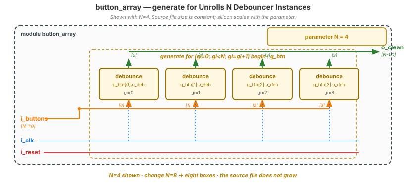
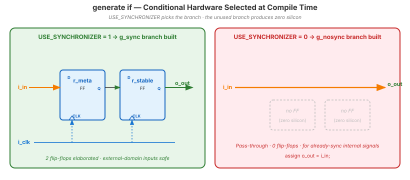
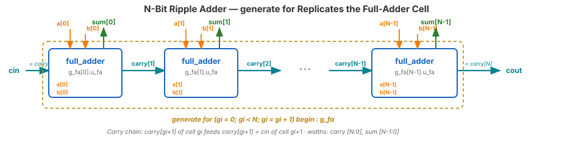

Video 3 of 4 · ~9 minutes
Dr. Mike Borowczak · Electrical & Computer Engineering · CECS · UCF
Every wide bus in a modern SoC is a generate array. 64-bit adders: 64 full-adder cells generated. 8-way set-associative caches: 8 way modules generated. SIMD lanes (NEON, AVX): N parallel ALUs generated. The CPU pipeline is often N parallel execution units generated. A parameterized generate block is how you scale a design from a 4-core chip to a 64-core chip by changing one number.
Your Go Board has 4 buttons — you'll generate 4 debouncers instead of copy-pasting. Your Topic 11 parallel-to-serial converter generates per-bit logic. Topic 12 SPI uses it for variable-width word sizes. Real products scale through this feature.
generate for Is Not a Software Loop“generate for (i=0; i<N; i++) is a for-loop. It executes N times during simulation, one iteration per clock.”
A generate for is not a runtime loop. It is compile-time replication. The synthesizer unrolls the loop at compile time, producing N physical copies of the hardware it contains. After synthesis, no loop exists. Only N parallel circuits running simultaneously.
generate for i=0..7 with a full-adder inside = 8 physical full-adders, all active in parallel. Like having typed 8 instantiations. Yosys literally unrolls before synthesis.
module button_array #(
parameter N = 4 // # buttons
) (
input wire i_clk, i_reset,
input wire [N-1:0] i_buttons,
output wire [N-1:0] o_clean
);
genvar gi; // compile-time index
generate
for (gi=0; gi<N; gi=gi+1)
begin : g_btn // <-- named scope
debounce #(.CLKS_STABLE(500_000)) u_deb (
.i_clk (i_clk),
.i_reset (i_reset),
.i_noisy (i_buttons[gi]),
.o_clean (o_clean[gi])
);
end
endgenerate
endmodule
genvar gi = compile-time loop index. (2) begin : g_btn names the generate scope — shows up in waveforms as dut.g_btn[0].u_deb. (3) Inner code reads as one instantiation; elaborator produces N physical copies.
generate if for Conditional Hardwaremodule configurable_pipe #(
parameter USE_SYNCHRONIZER = 1
) (
input wire i_clk, i_in,
output wire o_out
);
generate
if (USE_SYNCHRONIZER) begin : g_sync
reg r_meta, r_stable;
always @(posedge i_clk) begin
r_meta <= i_in;
r_stable <= r_meta;
end
assign o_out = r_stable;
end else begin : g_nosync
assign o_out = i_in; // direct
end
endgenerate
endmodule
generate if includes hardware conditionally at compile time. USE_SYNCHRONIZER=0 means the tool builds no synchronizer — not even a wire-through-an-FF. Internal signals skip the synchronizer; external signals get one.
Build an N-bit ripple-carry adder from N full-adder instances. Each full_adder has inputs a, b, cin and outputs sum, cout. The carry chains from bit i to bit i+1.

wire [N:0] carry;
assign carry[0] = cin;
genvar gi;
generate for (gi = 0; gi < N; gi = gi + 1) begin : g_fa
full_adder u_fa (
.a(a[gi]), .b(b[gi]), .cin(carry[gi]),
.sum(sum[gi]), .cout(carry[gi+1])
);
end endgenerate
assign cout = carry[N];gi+1 reads what element gi wrote. Classic bit-serial pattern.
~4 minutes
▸ COMMANDS
cd lecture_examples/week2_day08/d08_s3_ex3/
make stat N=4 # 4 debouncers
make stat N=8
make stat N=16 # 16 — exceeds iCE40 HX1K!
make sim N=4 # testbench scales too▸ EXPECTED STDOUT
N=4: 160 cells (~12% HX1K)
N=8: 320 cells (~25%)
N=16: 640 cells (~50%)
# scaling is exactly linear
# — no fixed overhead▸ KEY OBSERVATION
One Verilog file, one parameter change, three different-sized designs. The Verilog doesn't grow — only the gate count does. This is what makes generate a force multiplier.
$ yosys -p "read_verilog ... button_array.v; chparam -set N 4 button_array; \
synth_ice40; stat"
=== button_array === # N=4
Number of cells: 160 (= 4 × ~40-cell debouncer)
Contains sub-instances:
g_btn[0].u_deb (debounce)
g_btn[1].u_deb (debounce)
g_btn[2].u_deb (debounce)
g_btn[3].u_deb (debounce)g_btn) appears in hierarchy output and in GTKWave signal paths. tb.dut.g_btn[2].u_deb.r_count is the counter of the 3rd debouncer. Without that naming, you couldn't navigate generated hardware.
Ask AI: “Write a parameterized N-bit parity generator using generate-for blocks. Include a generate-if to optionally pipeline the result.”
TASK
AI combines generate-for + generate-if.
BEFORE
Predict: XOR tree via generate-for, optional pipeline stage via generate-if.
AFTER
Strong AI uses genvar, named scopes. Weak AI forgets the named scope.
TAKEAWAY
Require named scopes in your prompt. AI often forgets without explicit ask.
① generate for = compile-time hardware replication, not a runtime loop.
② generate if = conditional hardware; unused branch produces zero silicon.
③ Always use genvar and named scopes (begin : g_foo).
④ Combined with parameters, generate scales a design by changing one number.
🔗 Transfer
Video 4 of 4 · ~8 minutes
▸ WHY THIS MATTERS NEXT
You have all the tools: hierarchy, parameters, generate. Video 4 ties them together into a design philosophy: how to build modules someone else (or future-you) can drop into a project without reading the source. This is how your foundational-topic modules become a permanent toolbox — and it’s the skill the next theme relies on.